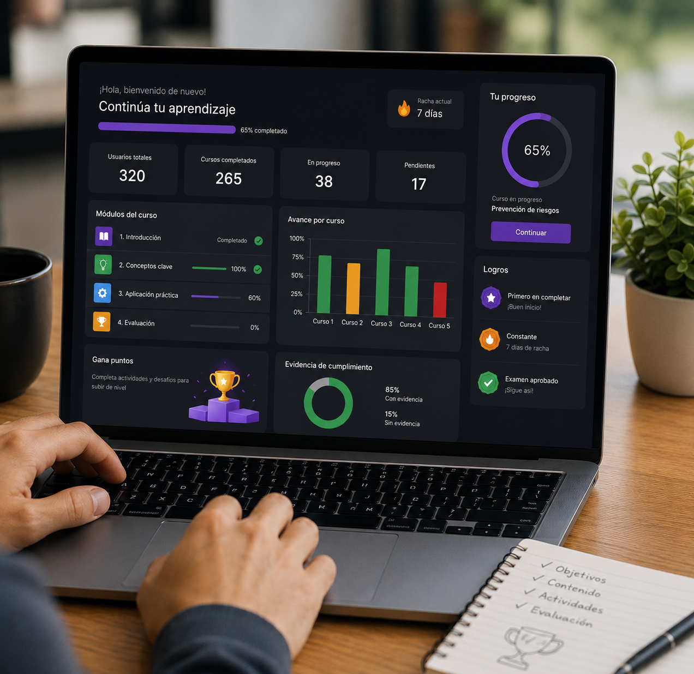
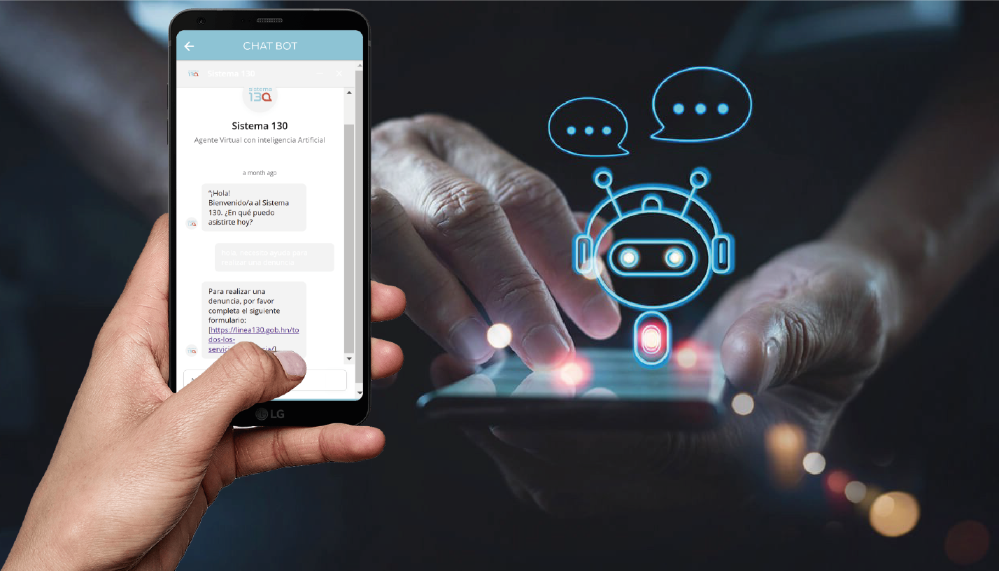
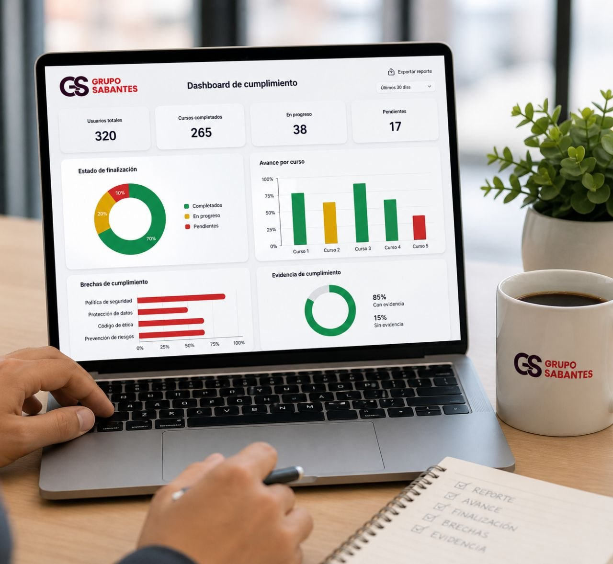

Consultoría integral
Alineamos la estrategia de formación con objetivos de negocio, riesgos, cumplimiento y arquitectura tecnológica.

Diseñamos, implementamos y automatizamos sistemas de aprendizaje con e-learning, IA, OVAs, Edubots y reportes de cumplimiento para instituciones y empresas.
Proyectos para instituciones públicas, organismos internacionales y equipos corporativos.
En 30 minutos identificamos riesgos, oportunidades de automatización y una ruta inicial para medir competencias y cumplimiento.

Muchas instituciones invierten en formación, pero terminan con baja trazabilidad, contenidos dispersos, poca evidencia de cumplimiento y equipos que no siempre dominan habilidades críticas.
Si la formación no se mide, no se puede defender ante auditorías, dirección o procesos de mejora.
Alineamos la estrategia de formación con objetivos de negocio, riesgos, cumplimiento y arquitectura tecnológica.

Combinamos virtualidad interactiva, sesiones experienciales, coaching y práctica aplicada.

Transformamos contenido crítico en módulos de autoformación claros, medibles y atractivos.
Usamos IA para soporte 24/7 y automatización de flujos entre sistemas.
Experiencias de autoformación gamificadas para dominar contenidos críticos.

Asistencia 24/7 para estudiantes, colaboradores o áreas internas.

Reportes para medir avance, finalización, brechas y evidencia de aprendizaje.
Identificamos contenidos críticos, públicos, procesos y riesgos operativos.
Definimos rutas, módulos, metodología, evaluación y evidencias.
Creamos OVAs, Edubots, apps, talleres, automatizaciones o LMS según el caso.
Entregamos reportes de avance, cumplimiento, adopción e impacto.
organizaciones y marcas atendidas
frentes integrados: estrategia, tecnología, aprendizaje y medición
soporte escalable con Edubots e IA aplicada
Hemos acompañado iniciativas de formación digital, innovación educativa y automatización del aprendizaje para instituciones públicas, organismos de cooperación, empresas privadas y equipos de formación.
Procesos formativos con enfoque en cumplimiento, trazabilidad y fortalecimiento de capacidades.
Diseño de experiencias de aprendizaje, materiales digitales y recursos interactivos para programas de impacto.
Soluciones de capacitación interna, automatización y soporte digital para equipos operativos.
Aulas virtuales, OVAs, cursos autogestionados y recursos medibles para aprendizaje escalable.
Proyectos diseñados para optimizar recursos y defender el retorno de inversión.
Procesos estandarizados, menos errores y evidencia para cumplimiento.
Experiencias intuitivas que mejoran participación y apropiación de competencias.
Reportes y trazabilidad para decisiones más claras y demostración de impacto.
Cómo están cambiando la capacitación en instituciones y empresas mediante experiencias flexibles, medibles y escalables.
Leer artículoUna solución de formación para pequeñas y medianas empresas que necesitan capacitar sin invertir en infraestructura propia.
Leer artículoRecursos digitales interactivos que transforman contenidos críticos en experiencias de aprendizaje claras, medibles y atractivas.
Leer artículo